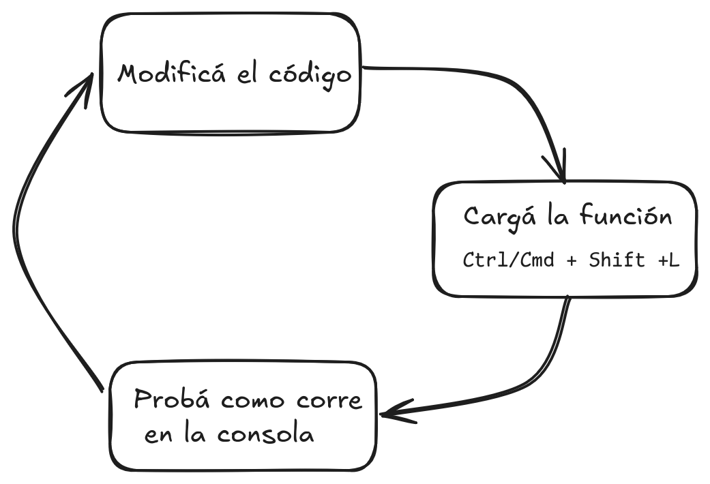

[1] "/home/paola/R/x86_64-pc-linux-gnu-library/4.5"
[2] "/opt/R/4.5.0/lib/R/library" 10 Empaquetando funciones
10.1 Objetivos de aprendizaje
- Identificar cuándo y por qué crear un paquete R.
- Conocer y utilizar los paquetes R devtools y usethis para automatizar y agilizar muchas de las tareas de desarrollo de paquetes.
- Aprende a crear un nuevo paquete R utilizando
usethis::create_package(). - Describir y explicar la finalidad de las carpetas y archivos de un paquete de R.
- Aprender cómo y por qué puedes añadir datos a un paquete de R.
10.2 ¿Por qué crear un paquete R?
El objetivo principal del desarrollo de software es simplificar alguna tarea o un conjunto de tareas para vos y para los demás (como tu equipo, u otras personas que usen tu trabajo). Esto también se aplica al desarrollo de software en R. Crear un paquete R es una de las formas más potentes de simplificar tareas, independientemente de lo sencillas o complejas que sean.
A lo largo de esta sección mostraremos que crear y desarrollar un programa R no es tan difícil como parece a primera vista. Pero antes de hacer un paquete, tenes que definir algunas cosas. Por ejemplo, ¿cómo determinar si tiene sentido hacer un paquete R? Respondé a las siguientes preguntas:
- ¿Creaste alguna vez una función, por sencilla que sea?
- ¿Utilizaste esa función más de una vez en más de un proyecto o archivo, ya sea copiándola y pegándola o utilizando el archivo que que la contiene?
Si respondiste afirmativamente a estas dos preguntas, entonces deberías crear un paquete R para esa función. Pero puede que te preguntes, ¿por qué hacer un paquete con una sola función? Porque nunca se acaba con sólo una función, es muy probable sumes otras a tu trabajo. Aparte de empaquetar las funciones de R, si tienes conjuntos de datos pequeños o medianos que utilizas en varios proyectos o archivos, puedes incluso empaquetar los datos.
Además, hacer un paquete de R ahora es mucho más fácil que en el pasado. Esto se debe en gran parte a otros paquetes de R como devtools y usethis que están diseñados para simplificar el desarrollo de paquetes. A esto se suman recursos gratuitos como libros y blogs y páginas en Internet para aprender a crear paquetes R y hacer desarrollo de software en R.
Crear un paquete R y publicarlo en GitHub o en CRAN como parate de trabajo científico, un proyecto o análisis ayuda a su reproducibilidad. Esto se debe a que hacer un paquete de R suele requerir un mayor nivel de rigor, tests, documentación y inspección del código, lo que significa que tú y los demás podrán confiar más en en los resultados. Y si está en GitHub, es mucho más fácil compartir tu trabajo. con otras pesonas y lo lograr que tu trabajo tenga mayor impacto en general.
10.3 ¿Qué es un paquete R?
Para entender qué es un paquete R, daremos un paso atrás y consideraremos lo que ocurre cuando interactuamos con R. El primer acercamiento a R es a través de la consola, donde escribís funciones en R para realizar tareas que que se imprimen en pantalla. Si no cambiaste la configuración inicial esa sesión de R correrar en tu carpeta raiz, normalmente algo parecido a /home/username/ en Linux, /Users/username/ para macOS, o C:\Users\username para Windows. Así que cualquier dato o gráfico que guardes o importes debe incluir la ruta del archivo a la ubicación correcta. Desde un punto de vista reproducible y modular esto va en contra de las buenas prácticas. Asimismo, el código de R qeu escribas en la consola no se guarda en ningún lado. Por tanto, no podés reutilizarlo o compartirlo fácilmente.
El siguiente nivel es guardar el código en un scriptde R (un archivo almacenado en cualquier lugar en el ordenador que termina en .R) y hacer que R ejecute este código en secuencia. En el pasado, la gente podía escribir scripts de R en editores de texto como vim, emacs o Notepad, y ejecutar manualmente el script en la consola de R. En la actualidad, la mayoría de la gente utiliza un Entorno de Desarrollo Integrado (IDE) como RStudio o VS Code. Este es el método más utilizado para realizar cualquier tipo de trabajo en R. Teóricamente, el código escrito de esta forma es reproducible y se puede compartir. Sin embargo, en la práctica, las personas escriben código de manera secuencial, resolviendo un problema luego del otro y trabajan con R de forma más interactiva que programáticamente. El directorio de trabajo de un script R en este caso no está definido, por lo que seguimos encontrando problemas similares a los que tenemos al usar la consola. Si bien se puede almacenar código o funciones de R en un script y cargarlas con source() desde otros scripts, esto implica hacer un seguimiento de los archivos con estas funciones y actualizarlos cuando corresponda.
Un paquete de R no es muy diferente de utilizar varios scripts. Existen ciertas expectativas y convenciones que deben seguirse para para que que el paquete se “instale” en tu computadora y quede disponible como paquete. Algunas de estas convenciones son:
Debe haber un archivo llamado
DESCRIPTIONque contiene los metadatos necesarios para que R sepa cómo instalar el paquete. Veremos qué debe incluir más adelante.Debe haber una carpeta llamada
R/. Normalmente sólo contendrá archivos.Ry sólo incluirán las funciones que hayas creado. Veremos como incorporar las funciones que ya tenemos dentro de un paquete.Debe haber un archivo
NAMESPACEque contenga la lista de funciones de tu paquete que esten disponibles para ser usadas. Este archivo se gestiona automáticamente con funciones de devtools y roxygen2.La carpeta que contiene todo, aunque no es obligatorio debería llamarse como el paquete. Por ejemplo, el paquete usethis tiene el nombre de carpeta
usethis/. Esto no es un requisito explícito, pero es muy recomendable. R determina el nombre del paquete a partir del campoPackage:en el archivoDESCRIPTION.
Nada de esto es algo de lo que tengas que preocuparte realmente porque los paquetes usethis y devtools están diseñados para hacer muchas de estas tareas de configuración de paquetes por ti, o al menos simplificarlas.
Hasta ahora interactuaste con paquetes de R instalados en tu computadora con install.packages() y que luego cargas en memoria con library() para poder usar sus funciones. Instalado y en memoria son dos estados posibles de un paquete. Pero ahora, en el contexto del desarrollo de paquetes, empezarás a trabajar con el código fuente. En este estado, el paquete tiene una pinta distinta y el flujo de trabajo también va a cambiar.
Los 5 estados en los que puede estar un paquete de R son:
- código fuente o source en inglés: incluye la carpeta y todos los archivos que mencionamos antes.
- bundled: es una versión comprimida del paquete, independiente del sistema operativo de las computadoras, a partir del cual puede ser instalado.
- binary o binario: es una versión del paquete lista para instalar, sin embargo depende del sistema operativo. Un binario creado para Windows no funcionará en Linux.
- instalado: es la version del paquete ya instalado en una computadora.
-
en memoria: el paquete está cargado en el ambiente de R y podemos usar las funciones porque corrimos
library(nombre_paquete).
¿Cómo funciona la instalación de paquetes? Depende. Si instalas el paquete desde CRAN, Bioconductor o R-Universe install.packages() va a descargar el bundle o el binario en tu computadora, y lo va a descomprimir la “librería de paquetes de R” (una carpeta medio escondida en tu computadora) y generar los archivos necesario para que puedas usarlo.
Si instalas tu paquete mientras lo estás desarrollando, R va a tomar el código fuente para generar los archivos necesarios y guardar los en la libreria de paquetes de R, de la misma manera que lo hace con cualquier otro paquete.
Esta “instalación del paquete” en la libreria no es más que una carpeta con archivos y otras carpetas que contienen el código de las funciones en un formato específico que entiende R. Para ver dónde están instalados los paquetes, utiliza:
Si corres esa función en la consola, es posible que el resultado sea un poco diferente a esto, depende de cada computadora. Si .libPaths() muestra más de una ruta, normalmente la primera contendrá todos los paquetes.
library(fs)
primary_library_path <- .libPaths()[1] #Elegimos la primera ruta
packages <- dir_ls(path(primary_library_path))
# Número de paquetes instalados
length(packages)[1] 205# Muestra los primeros 6
head(packages)/home/paola/R/x86_64-pc-linux-gnu-library/4.5/DBI
/home/paola/R/x86_64-pc-linux-gnu-library/4.5/DT
/home/paola/R/x86_64-pc-linux-gnu-library/4.5/FNN
/home/paola/R/x86_64-pc-linux-gnu-library/4.5/Formula
/home/paola/R/x86_64-pc-linux-gnu-library/4.5/Lahman
/home/paola/R/x86_64-pc-linux-gnu-library/4.5/Lmoments10.4 Nombrar un paquete
Crear un paquete no es complicado. Lo complicado es es nombrar el paquete. Crear un nombre significativo, que la gente recuerde y que se pueda buscar en Google es realmente difícil. No hay una manera fácil de y a menudo requiere varios días de pensar opciones. Pero además hay que asegurarse de que el nombre que estamos pensando usar no lo esté usando alguien más. Esto se puede hacer con el paquete pak. Por ahora para revisar el paso a paso para crear un paquete usaremos paqueteprueba como nombre. Revisemos si está disponible
╔══════════════════════════════════════════════════════════════════════════════╗
║ –*– paqueteprueba –*– ║
╚══════════════════════════════════════════════════════════════════════════════╝
┌──────────────────────────────────────────────────────────────────────────────┐
│ ✔ valid name ✔ CRAN ✔ Bioconductor ✔ not a profanity │
└──────────────────────────────────────────────────────────────────────────────┘
┌ Wikipedia ───────────────────────────────────────────────────────────────────┐
│ Paqueteprueba No definition found │
└──────────────────────────────────────────────────────────────────────────────┘
┌ Wiktionary ──────────────────────────────────────────────────────────────────┐
│ paqueteprueba No English definition found │
└──────────────────────────────────────────────────────────────────────────────┘
┌──────────────────────────────────────────────────────────────────────────────┐
│ Sentiment: :| (0) │
└──────────────────────────────────────────────────────────────────────────────┘En este caso paqueteprueba está disponible para que lo usemos.
Te habrás dado cuenta de que hemos utilizado la sintaxis nombrepaquete::nombrefuncion() unas cuantas veces. Esto le dice a R que utilice la función de un paquete concreto. Así que pak::pak() es decirle a R que utilice la función pak() del paquete pak. En desarrollo de paquetes en particular, utilizaremos esto en lugar de cargar las librerias con library(pak) porque queremos ser explícitos sobre qué función queremos utilizar y porque no necesitamos cargar todas las funciones del paquete cuando sólo queremos utilizar una o dos.
10.4.1 Requisitos formales
Existen tres requisitos formales:
- El nombre sólo puede estar formado por letras, números y puntos, es decir, .
- Debe empezar por una letra.
- No puede terminar con un punto.
Lamentablemente, esto significa que no puede utilizar guiones ni guiones bajos, es decir, - o _, en el nombre del paquete. Desaconsejamos el uso de puntos en los nombres de paquetes, para evitar que se confunda con extensiones de archivos y métodos S3.
10.5 Estructura de un paquete
Ahora que tenemos un nombre, el siguiente paso es configurar la infraestructura básica para el paquete. Afortunadamente, el paquete usethis ayuda resolver gran parte del trabajo. Cuando usemosla función usethis::create_package() configurará los archivos y carpetas básicos que necesitamos para crear un paquete y que R lo instale como tal. Utilizaremos esta función para crear el paquete paqueteprueba.
usethis::create_package(path = "~/Documentos/Courses/paqueteprueba")En este caso estamos creando el paquete en la carpeta Documentos, pero también podríamos crearlo en cualquier otra carpeta. Esta linea de código además se corre en la consola, no tendría sentido que corra en un script ya que no es algo que haremos todos los días. El resultado es el siguiente
✔ Creating 'C:/Users/tonin/Documentos/paqueteprueba/'
✔ Setting active project to 'C:/Users/tonin/Documentos/paqueteprueba'
✔ Creating 'R/'
✔ Writing 'DESCRIPTION'
Package: paqueteprueba
Title: What the Package Does (One Line, Title Case)
Version: 0.0.0.9000
Authors@R (parsed):
* First Last <first.last@example.com> [aut, cre] (YOUR-ORCID-ID)
Description: What the package does (one paragraph).
License: `use_mit_license()`, `use_gpl3_license()` or friends to
pick a license
Encoding: UTF-8
Roxygen: list(markdown = TRUE)
RoxygenNote: 7.3.1
✔ Writing 'NAMESPACE'
✔ Writing 'paqueteprueba.Rproj'
✔ Adding '^paqueteprueba\\.Rproj$' to '.Rbuildignore'
✔ Adding '.Rproj.user' to '.gitignore'
✔ Adding '^\\.Rproj\\.user$' to '.Rbuildignore'
✔ Opening 'C:/Users/tonin/Documentos/paqueteprueba/' in new RStudio session
✔ Setting active project to '<no active project>Donde sea que hayas creado el paquete ahora tendrás una carpeta llamada paqueteprueba con los archivos mínimos para instalar el paquete. Esta carpeta es al mismo tiempo un projecto de RStudio, es es porque estamos usando usethis y RStudio y viene con todas las ventajas que vimos. Sin embargo, no es impresindible que un paquete sea un proyecto al mismo tiempo.
fs::dir_tree("C:/Users/tonin/Documents/Courses/paqueteprueba/", all = TRUE)C:/Users/tonin/Documents/Courses/paqueteprueba/
├── .gitignore
├── .Rbuildignore
├── .Rproj.user
├── DESCRIPTION
├── NAMESPACE
├── paqueteprueba.Rproj
└── RAdemás del los archivos DESCRIPTION, NAMESPACE y la carpeta R que ya presentamos, hay algunos archivos y carpetas ocultas. Conocés el .gitignore, pero .Rbuildignore y .Rproj.user son nuevos. El primero es parecido a .gitignore, incluye la lista de archivos y carpetas que R deberá ignorar al momento de construir el paquete, por ahora la lista es corta pero ira creciendo a medida que sumemos cosas al paquete. La carpeta .Rproj.user es algo que está en todo projecto de RStudio e incluye las configuraciones específicas del proyecto.
10.5.1 Control de versiones en el desarrollo de paquetes
Si bien es posible desarrollar un paquete de R sin utilizar git y GitHub, vale la pena el esfuerzo extra. Entre otras razones que tienen que ver con las ventajas del control de versiones, GitHub es una de las principales maneras de compartir software y en particular, paquetes de R.
Previamente vimos como crear un repositorio desde GitHub y asociarlo a un repositorio local. En esta sección usaremos funciones de usethis para automatizar esas tareas.
10.5.1.1 Repositorio local
Para crear el repositorio local usaremos usethis::use_git(). Es importante correr la función en la consola y asegurarnos que el proyecto de R esté abierto (aparece el nombre en la esquina superior derecha de RStudio) para asegurarnos que el repositorio local esté asociado a nuestro paquete.
usethis::use_git()Esta funcion va a crear el repositorio y generara un commit inicial de todos los archivos que estén presentes en el proyecto. Va a preguntarte si queres hacer esto. Contestale que si seleccionado la opción afirmativa. Luego va a preguntarte si queres reiniciar RStudio. Esto es necesario para que aparezca la pestaña de Git desde la cual podremos trabajar sobre el repositorio. Seleccioná la opción afirmativa, ojo que siempre cambia el orden!
> usethis::use_git()
✔ Setting active project to "/ubicacion/de/tu/proyecto".
✔ Initialising Git repo.
✔ Adding ".Rproj.user", ".Rhistory", ".Rdata", ".httr-oauth", ".DS_Store", and ".quarto" to
.gitignore.
ℹ There are 2 uncommitted files:
• .gitignore
• test.Rproj
! Is it ok to commit them?
1: Negative
2: Yup
3: Nope
Selection: 2
✔ Adding files.
✔ Making a commit with message "Initial commit".
A restart of RStudio is required to activate the Git pane.
Restart now?
1: Absolutely not
2: No
3: Yes
Selection: 310.5.1.2 Repositorio remoto en GitHub
Podemos crear el repositorio remoto desde RStudio corriendo usethis::use_github() desde la consola.
> usethis::use_github()Esta funcion hace lo siguiente:
- Crea un nuevo repositorio en GitHub con el nombre del proyecto.
- Configura ese nuevo repositorio como origen remoto para el repositorio local.
- Configura tu branch local por defecto para realizar el mismo seguimiento en el origen y realiza un push inicial.
- Abre el nuevo repositorio en tu navegador.
La función devolverá algo similar a esto en la consola:
✔ Creating GitHub repository "paocorrales/paqueteprueba".
✔ Setting remote "origin" to "https://github.com/paocorrales/paqueteprueba.git".
✔ Adding "https://github.com/paocorrales/paqueteprueba" to URL.
✔ Adding "https://github.com/paocorrales/paqueteprueba/issues" to BugReports.
ℹ There is 1 uncommitted file: • DESCRIPTION !
Is it ok to commit it?
1: Absolutely not
2: Not now
3: Yes
Selection: 3
✔ Adding files.
✔ Making a commit with message "Add GitHub inks to DESCRIPTION".
✔ Pushing "master" branch to GitHub and setting "origin/master" as upstream branch.
✔ Opening URL <https://github.com/paocorrales/paqueteprueba>.Y con esto ya podes empezar a trabajar en el paquete.
10.5.2 Completando el archivo DESCRIPTION
El archivo DESCRIPTION contiene los metadatos del paquete paquete y algunos parámetros de configuración que R utiliza al construirlo e instalarlo. El formato de los metadatos utiliza el patrón key: value. Así, por ejemplo, la clave Package tiene el valor paqueteprueba, que le dice a R cuál es el nombre del paquete. Asimismo, Title y Authors proporcionan un poco más de información sobre lo que hace el paquete y quién lo creó. Un archivo DESCRIPTION completo tiene muchas otros campos, alguns de los cuales no son importantes ya que son creadas automáticamente y usados internamente por R para propósitos generales durante la construcción del paquete. Otros, son bastante importantes. Específicamente, las claves Title, Authors, y Description deberían tener más valores más apropiados.
Los campos Title y Description describen lo que hace el paquete. Sólo se diferencian en la longitud:
- El título es una descripción del paquete en una línea, y a menudo se muestra en listados de paquetes. Debe ser texto plano (sin marcas), cada palabra en mayúsculas como un título, y NO terminar en un punto. Se breve: los listados suelen truncar el título a 65 caracteres.
- La descripción es más detallada que el título. Puede utilizar varias frases, pero está limitado a un párrafo. Si la descripción abarca varias líneas (y así debe ser), cada una de ellas no debe superar los 80 caracteres. Deje 4 espacios entre las líneas siguientes.
Por ejemplo el título y la descripción de ggplot2 tienen esta pinta:
Title: Create Elegant Data Visualisations Using the Grammar of Graphics
Description: A system for 'declaratively' creating graphics,
based on "The Grammar of Graphics". You provide the data, tell 'ggplot2'
how to map variables to aesthetics, what graphical primitives to use,
and it takes care of the details.El campo Authors@R se utiliza para identificar al autor o autora del paquete, y a quién contactar si algo no funciona. Este campo es inusual porque contiene código R en lugar de texto plano. Este es un ejemplo:
Autores@R: person("Paola", "Corrales", email = "mimail@pao.com",
role = c("aut", "cre"))Estamos usando la función person() que viene con R base en el paquete utils.
[1] "Paola Corrales <mimail@pao.com> [aut, cre]"Esta función dice que Paola Corrales está a cargo de mantener el paquete (cre) y es autora (aut) y que su dirección de correo electrónico es mimail@pao.com. Es posible listar a más de una persona en este campo. La función person() tiene cuatro argumentos principales:
El nombre, especificado por los dos primeros argumentos,
givenyfamily. En la cultura occidental,given(nombre) va antes quefamily(apellido). En muchas otras culturas, esta convención no es válida. Para agregar una entidad, empresa u organización, como “R Core Team” o “Posit Software, PBC”, se usa el argumentogiven(y se omitefamily).La dirección de
email, es solo un requisito para quien mantiene el paquete. Es importante que uses una dirección de correo electrónico a la que tengas acceso permanente. La política de CRAN requiere que sea para una persona, en lugar de, por ejemplo, una lista de correo.-
Uno o más códigos de tres letras especificando el
role. Estos son los roles más importantes que hay que conocer:cre: quien mantiene le paquete y la persona a la que deberías molestar si tenés problemas usandolo. A pesar de ser la abreviatura de «creator», este es el rol correcto para el mantenedor, incluso si no es la persona que inicialmente creó el paquete.aut: autores, aquellas personas que han hecho contribuciones significativas al paquete.ctb: contribuidores, aquellas personas que han hecho contribuciones menores, como parches.cph: titular de los derechos de autor. Se utiliza para listar titulares de copyright adicionales que no son autores, normalmente empresas, como un empleador de uno o más de los autores.fnd`: financiador, las personas u organizaciones que han proporcionado apoyo financiero para el desarrollo del paquete.
El argumento opcional
commentse usa para incluir el identificador de ORCID. Y es particularmente útil en el ámbito académico.
Es momento de empezar a darle forma al paquete.
- Si aún no seguiste las instrucciones para crear el
paqueteprueba, es el momento. No te preocupes por el nombre, este paquete es solo para practicar. - Abrí el projecto/paquete.
- Abrí el archivo DESCRIPTION y completá los campos
Title,Authors, yDescription
10.6 Flujo de trabajo para el desarrollo de paquetes
Aunque hay varias formas de desarrollar un paquete R, un flujo de trabajo bien establecido y documentado gira en torno a hacer uso de usethis y devtools.
Los pasos típicos utilizados en este flujo de trabajo de desarrollo son:
Cuando tengas una idea de una función o conjunto de funciones similares, por por ejemplo, sumar 2 números, es momento de iniciar un nuevo script. Para eso escribí en la consola
usethis::use_r("suma"). Se creará un nuevo archivo R en la carpetaR/y se abrirá en RStudio.En este nuevo archivo podrás empezar a crear y desarrollar la función, escribiendo los argumentos de entrada y la eventual salida. Por ahora llegamos hasta acá pero pronto veremos como documentar la función.
Una vez que sienta que la función está lista para ser probada, podés probar la función ejecutándola en el mismo script, en la consola o en un archivo R Markdown. La otra alternativa para que la función esté disponible para R, es cargarla con
Ctrl-Shift-Lque ejecuta el comandoload_all()(dedevtools). Esto solo funciona porque estamos desarrollando un paquete.A menos que la función que creaste sea muy simple es muy improbable que funcione perfectamente la primera, lo más probable es que la función exactamente como esperabas o de un error. En ese caso tendrás que modificarla, cargarla nuevamente con
load_all()y probarla nuevamenta tantas veces como sea neceasario hasta conseguir los resultados que necesitas. función.
Vamos a probar un poco de este flujo de trabajo haciendo una función de práctica. En la consola, escribí esta función:
usethis::use_r("funcion_prueba")A continuación se abrirá el recientemente creado archivo R/funcion_prueba.R. Escribí la función y guardá los cambios en el archivo.
suma <- function(x, y) {
x + y
}Antes de hacer nada, escribe suma(2, 2) en la Consola y apretá enter para ejecutarlo. ¿Qué ocurre? Nada. Eso es porque R no sabe que la función existe. Tenemos que hacer que R la conozca ya sea ejecutando la función directamente desde el script (Ctrl-Enter para enviar a la Consola), usando source() en el script, instalando el paquete, o imitando la instalación del paquete con la función load_all(). Como estamos desarrollando un paquete usaremos la función load_all().
Vamos a probar la función load_all() con el atajo Ctrl-Shift-L. Ahora si, volvé a escribir suma(2, 2) en la consola. Ahora deberías ver que funciona.
El flujo de trabajo para el desarrollo de funciones en un paquete tiene entonces esta pinta:

Practiquemos el flujo de trabajo
Ya que usarás este flujo de trabajo cuando hagas paquetes en R, es hora de que lo practiques.
Realiza los siguientes cambios en la función. Con cada cambio, vuelva a cargarla (Ctrl-Shift-L en RStudio o load_all() en la Consola) para que las funciones actualizadas estén disponibles. Después de cada cambio probá que la función haga lo que debe hacer.
Agregá valores por defecto para los argumentos
xey. Probá correr la función sin pasarle argumentos:suma().Modificá la función para que chequee que los argumentos sean numéricos. Probá la función con
suma("1", 1)Modifica nuevamente la función para que si
xoyson negativos, la función devuelva “No puedo sumar negativos”.
10.6.1 Datos en paquetes
Muchos paquetes de R incluyen datos, en algunos casos porque son útiles para mostrar como usar las funciones que incluye, en otros casos porque es el objetivo principal de ese paquete. El paquete datos es el mejor ejemplo de esto último.
En la mayoría de los casos los datos en el paquete estarán disponibles para que las personas los usen. Guardaremos estos datos en la carpeta /data y el flujo de trabajo usando usethis tendrá esta pinta:
# Leer datos desde algún archivo
# o generar datos
# Manipular los datos para que tengan la pinta que necesitamos
datos <- sample(1000)
usethis::use_data(datos)La función nos devolverá lo siguiente:
✔ Adding 'R' to Depends field in DESCRIPTION
✔ Creating 'data/'
✔ Setting LazyData to 'true' in 'DESCRIPTION'
✔ Saving 'datos' to 'data/datos.rda'
• Document your data (see 'https://r-pkgs.org/data.html')Es decir, automáticamente crea la carpeta y guarda los datos con formato .rds (un tipo de archivo específico de R). En principio el código de arriba solo se correrá una vez a menos que sea necesario actualizar los datos. Sin embargo es una buena idea guarda el código y los datos crudos si los hubiera en data_raw. Esta carpeta además no debe incluirse cuando se construye el paquete por lo que hay que agregarla a Rbuildignore.
Ahora si apretamos Ctrl-Shift-L para cargar de nuevo el paquete de prueba y escribimos datos en la consola veremos los datos que creamos.
10.7 Construyendo un paquete de R paso a paso
Es hora de empezar a unir lo que hicimos. El objetivo de este ejercicio es crear la estructura de un paquete que lean y analice datos de estaciones meteorológicas. Pero además este será un trabajo colaborativo entre 2 personas para practicar como desarrollar software en equipo usando GitHub.
Crear el paquete
Piensen un nombre para el paquete, debe seguir las reglas pero no importa si se repite en otro ámbito.
El paquete debera estar en la cuenta de GitHub de una de las personas que integran el grupo. Decidan quien sera y realicen los siguientes pasos en la computadora de esa persona.
Creen la estructura del paquete con
usethis.Modifiquen el archivo DESCRIPTION con todo lo necesario.
Conectarlo con Git localmente
- Para crear el repositorio local usá la función de usethis correspondiente.
Crear el repo remoto en GitHub
Con el proyecto del paquete abierto en RStudio en la computadora de la persona que tendra el repo en GitHub debe correr la función de usethis que genera el repositorio remoto.
-
Modificar la configuración del repositorio en GitHub para que la otra persona del grupo tenga los permisos necesarios para hacer commits y push. Necesitarás sabes su nombre de usuario.
En GitHub.com, navega a la página principal del repositorio.
-
Hacé clic en Settings.

Captura de pantalla de un encabezado de repositorio en el que se muestran las pestañas. La pestaña “Configuración” está resaltada con un contorno naranja oscuro. En la sección “Access” de la barra lateral, haz clic en Colaborators.
Hacé clik en el botón verde Add people.
Comenzá a teclear el nombre de la persona que deseas invitar dentro del campo de búsqueda hasta que aparezca.
Hacé clikc en Add NOMBRE to this repository.
La persona recibirá un correo electrónico invitándole al repositorio. Una vez que acepte la invitación, tendrá acceso de colaborador a tu repositorio.
La otra persona del grupo ahora puede clonar el repo en su computadora, siguiendo los pasos que vimos cuando trabajaron individualmente con git y Github.
Modificá el README.md para indicar que el paquete es de prueba, que no está pensado para ser usado como tal.